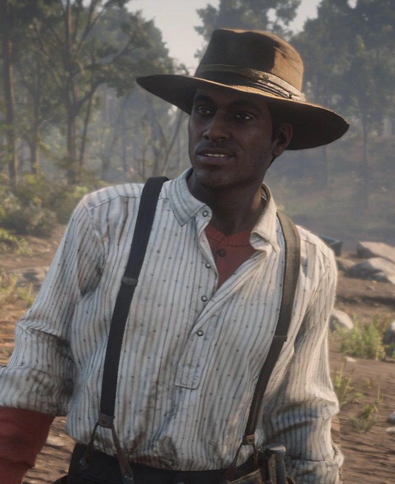
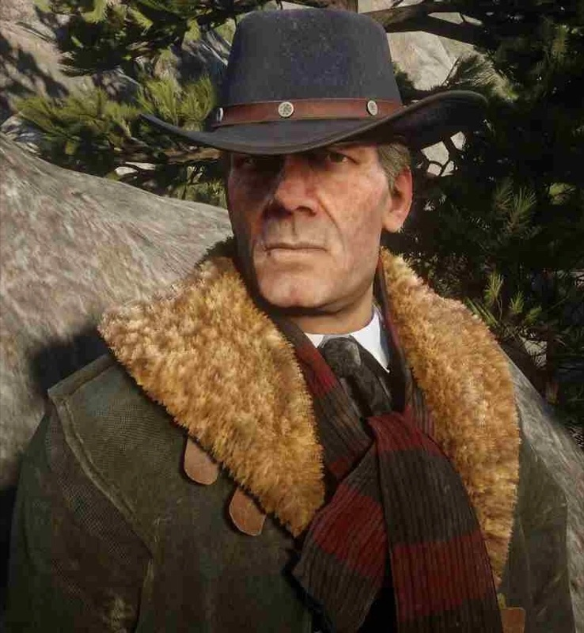
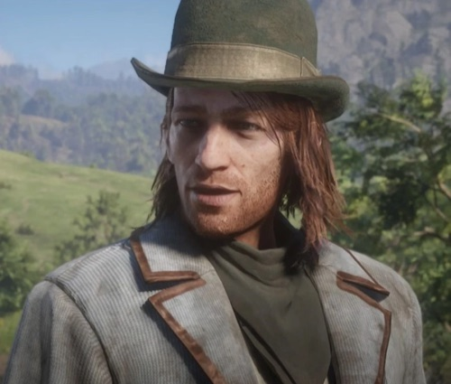
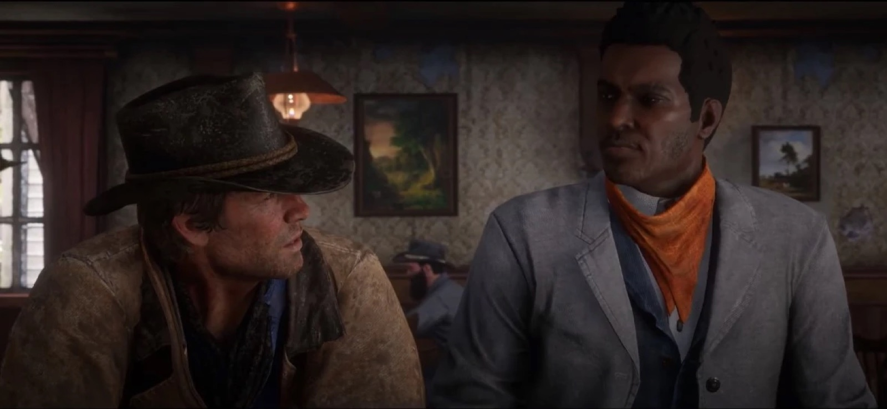

Character · Van der Linde gang
Lenny Summers
Lenny Summers is the youngest gunman of the Van der Linde gang in Red Dead Redemption 2. Born in 1880 to former slaves, he is educated and close to Arthur Morgan.
He is killed in 1899 during the Saint Denis bank robbery.
- Full name
- Leonard Summers
- Born
- 1880
- Died
- 1899, Saint Denis
- Status
- Deceased
- Affiliation
- Van der Linde gang
- Voiced by
- Harron Atkins
- Games
- Red Dead Redemption 2
Biography
Origins
Lenny's father, an educated man, taught him to read and write. When Lenny was 15, his father was killed by drunken men; Lenny took a gun and shot them. He spent three years on the run before joining the gang.
In the gang
In chapter 1, Lenny takes part in the raid on the O'Driscoll camp. In chapter 2, he scouts Strawberry with Micah Bell; Micah is arrested and Lenny rides back to camp alone. In "A Quiet Time", he and Arthur spend a night drinking at a saloon in Valentine.
In chapter 3, in "Preaching Forgiveness as He Went", a tip from Black residents of Rhodes leads Lenny and Arthur to the Lemoyne Raiders hiding at Shady Belle, whom they kill before seizing their weapons. Lenny also robs the Valentine bank with Arthur, Bill and Karen.
Death
In chapter 4, during "Banking, The Old American Art", the robbery of the Saint Denis bank goes wrong. Lenny is shot by Pinkertons during the escape across the rooftops. Hosea Matthews is killed the same day.
Relationships

Arthur Morgan
His closest friend in the gang, from the Valentine saloon to Shady Belle.

Micah Bell
Scouts Strawberry with him before being arrested.

Hosea Matthews
Killed on the same day, during the Saint Denis bank job.

Sean MacGuire
A fellow young member of the gang.

Dutch van der Linde
Leads the Saint Denis robbery that costs Lenny his life.
Development and performance
Lenny is played by Harron Atkins, who provided the voice and the motion capture.
Interviewed by Twinfinite in February 2019, Roger Clark, who plays Arthur, said the saloon scene was shot over "two or three days" and that by then he knew Atkins "very well". Rockstar told him the scene would use "really frenetic editing", unlike the rest of the game, to convey drunkenness.
Reception
In February 2019, Game Informer's Jason Guisao described Lenny as "a vocal reminder of the heightened racial tensions that plagued the wild frontier" and called "Preaching Forgiveness as He Went" "particularly striking". The same month, Slate's Jonathan S. Jones cited Lenny, Arthur's "protégé", as part of the game's "overt commentary about the brutality of life under slavery and Jim Crow".
Gallery
